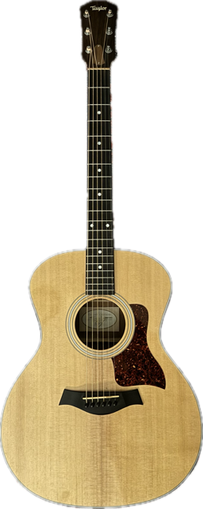
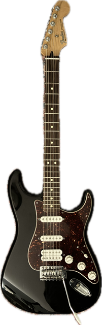
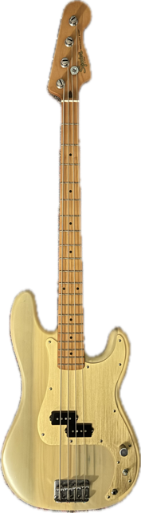
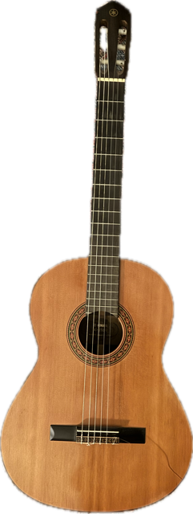

taylor model 314
this was a generous gift from my neighbor in 2022. i play it everyday and it's the reason why my music sounds the way it does.
this was a generous gift from my neighbor in 2022. i play it everyday and it's the reason why my music sounds the way it does.

fender mexican stratocaster
bought this used from the guitar center online store in 2021. it was a gamble since i had never played it. it was the best decision i made cuz it was reasonably priced, had like no flaws, and i do everything on it.
bought this used from the guitar center online store in 2021. it was a gamble since i had never played it. it was the best decision i made cuz it was reasonably priced, had like no flaws, and i do everything on it.

squier precision bass
got this in april of 2023. will be playing her more soon. i don't do anything crazy on bass but it's fun & i record my basic basslines on this. haven't changed the strings in forever though...

yamaha g-170a
my first ever guitar. it was my grandma's. one of the strings snapped and i don't really play it anymore. just haven't bought the strings for it plus the action is way high.
my first ever guitar. it was my grandma's. one of the strings snapped and i don't really play it anymore. just haven't bought the strings for it plus the action is way high.

makala soprano ukulele
i was ukulele girl in 8th grade. i don't remember how to play anything anymore but i keep it as a memento for my early days in music.
i was ukulele girl in 8th grade. i don't remember how to play anything anymore but i keep it as a memento for my early days in music.

fender gt100
bought this because my guitarist, and friend, drew, told me to buy it. i only started recording my amp because of him - otherwise i would just di it. needed this amp for playing shows too.
bought this because my guitarist, and friend, drew, told me to buy it. i only started recording my amp because of him - otherwise i would just di it. needed this amp for playing shows too.

arturia keylab essential 61 mk3
my dad got this for me as a belated christmas present. i love using the labs vst pianos on it.
my dad got this for me as a belated christmas present. i love using the labs vst pianos on it.

akai mpk mini
got this used when i first started making music and i barely used it. it's just quicker to play on my laptop keyboard when inspiration strikes.
got this used when i first started making music and i barely used it. it's just quicker to play on my laptop keyboard when inspiration strikes.

casio wk-210
my childhood best friend gave this to me - in return i gave him my skateboard. i used to sing cover songs on this.
my childhood best friend gave this to me - in return i gave him my skateboard. i used to sing cover songs on this.

at2035
got this in 2022 and i use it all the freaking time oh my god. my favorite mic. a budget choice but it delievers!
got this in 2022 and i use it all the freaking time oh my god. my favorite mic. a budget choice but it delievers!

shure sm57
a classic. can't go wrong with this one. i use it on my amp and acoustic sometimes but tbh i like condensors on acoustic.
a classic. can't go wrong with this one. i use it on my amp and acoustic sometimes but tbh i like condensors on acoustic.

dt 770 pro 80 ohm
got these in 2023 - before this i was recording and mixing everything on bose headphones lol. these sound really good and deliver a flat signal.
got these in 2023 - before this i was recording and mixing everything on bose headphones lol. these sound really good and deliver a flat signal.

scarlett 2i2
the symbol of your boyfriend's failed music career. it does the job though - had this since 2022.
the symbol of your boyfriend's failed music career. it does the job though - had this since 2022.

wd elements hard drive
my life is on this thing... it's 1tb but i've already used up half the storage. it's just full of so many logic projects oh my god. i would die without this.
my life is on this thing... it's 1tb but i've already used up half the storage. it's just full of so many logic projects oh my god. i would die without this.

radial pro48 active di box
got this in 2023 i think. i use this to record my amp signal and di signal at the same time. most of the time i never even use the di signal.
got this in 2023 i think. i use this to record my amp signal and di signal at the same time. most of the time i never even use the di signal.

boss ds-1
i was soo dumb for buying this but i use it a lot. the guy who sold me my amp didn't send the footswitch with it & i didn't even know those existed, so i bought this. my amp can simulate this.
i was soo dumb for buying this but i use it a lot. the guy who sold me my amp didn't send the footswitch with it & i didn't even know those existed, so i bought this. my amp can simulate this.

boss ch-1
the chorus on my amp wasn't cutting it for a song i was recording for release, so i bought this. i also don't think i really needed it... whatever. got it cuz i saw it was on king krule's gear list.
the chorus on my amp wasn't cutting it for a song i was recording for release, so i bought this. i also don't think i really needed it... whatever. got it cuz i saw it was on king krule's gear list.

boss sd-1
i was also kind of dumb for buying this. it was an impulse buy because i thought it would solve a tone problem in one of my songs. it didn't.
i was also kind of dumb for buying this. it was an impulse buy because i thought it would solve a tone problem in one of my songs. it didn't.